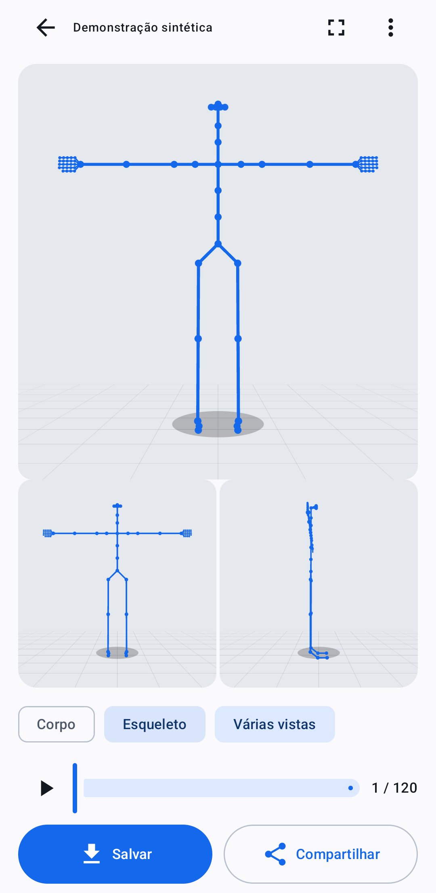

Attach or record
Select a local video or record through the Android camera application.
Import a video or record one using the device camera. Review the segment and focus area, prepare the video, inspect the resulting Nova-77 pose sequence in 3D, and export pose data.
Experimental APKs are intended for testing only.

Select a local video or record through the Android camera application.
Choose a time range, optionally set a focus window, and press Next to start preparation.
Inspect 3D pose frames. Empty frames and consecutive duplicates can be omitted.
Save a project or share JSONL pose data, applying selected frame filters.
An offline synthetic preview is available for testing the interface.
Requires JDK 17, Android SDK Platform 35 and Build Tools 35.0.0. Set ANDROID_HOME to the SDK directory.
Windows / PowerShell
git clone https://github.com/JeanGoetten/Pocket-Poser-App.git cd Pocket-Poser-App .\gradlew.bat :app:assembleDebug
Linux / macOS
git clone https://github.com/JeanGoetten/Pocket-Poser-App.git cd Pocket-Poser-App ./gradlew :app:assembleDebug
Output: app/build/outputs/apk/debug/app-debug.apk. Debug builds are for testing only, not production use.
Single-person tracking is experimental. Processing runs partly on the device and partly through NVIDIA Body Pose using a user-provided account. Video processing can incur provider charges. The JSONL export contains pose data, not an animated video.
The public download is enabled only when a public GitHub Release contains an APK. Check the repository for the source, license and privacy documentation.